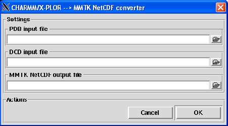

Next: DL_POLY to MMTK
Up: Trajectory conversion
Previous: Amber to MMTK
Contents
CHARMM/X-PLOR to MMTK
This converter allows the conversion from a trajectory generated with CHARMM or X-PLOR [27,35] to a
MMTK NetCDF trajectory. Pressing the CHARMM/X-PLOR to MMTK menubutton, the dialog shown in figure 4.5 will pop up.
Figure 4.5:
The CHARMM to MMTK converter dialog.
|

|
To perform the conversion, the following input fields must be filled:
- PDB input file
Format: string
Default: None
Description: a PDB file of the system must be provided for the conversion. This file is necessary to build up
the MMTK universe related to the MMTK trajectory.
- DCD input file
Format: string
Default: None
Description: the CHARMM DCD trajectory file that stores the trajectory frames.
- MMTK NetCDF output file
Format: string
Default: None
Description: the name of the MMTK NetCDF trajectory that will be written. Once, a DCD file has been
loaded, a default name for the MMTK NetCDF output file will be proposed. This default name will be
file.nc if file.dcd is the DCD trajectory file name.
Next: DL_POLY to MMTK
Up: Trajectory conversion
Previous: Amber to MMTK
Contents
pellegrini eric
2009-10-06